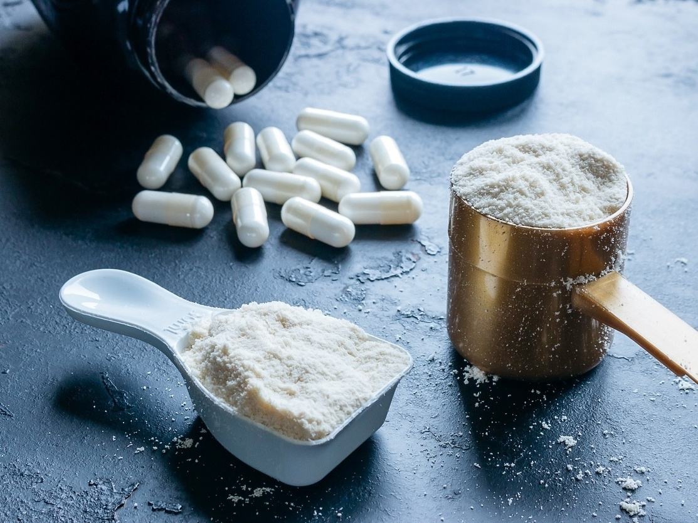
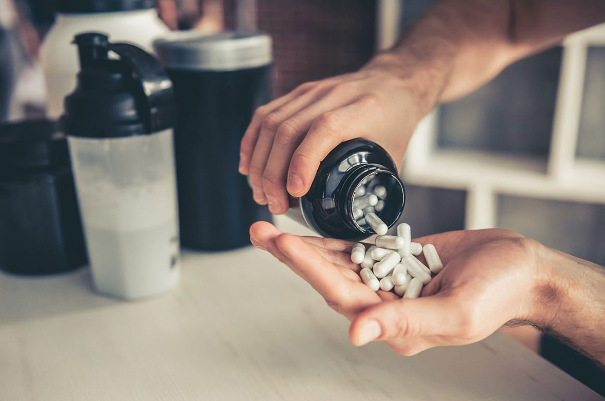

BCAA: MAIS ENERGIA E FORÇA PARA OS SEUS TREINOS

O que é BCAA?
A sigla, que já é uma velha conhecida entre os praticantes de exercícios físicos e frequentadores de academias, é derivada do termo em inglês Branched Chain Amino Acids que, em uma tradução simples, significa “aminoácidos de cadeia ramificada”. No entanto, somente conhecer a tradução do termo que deu origem a esta sigla não é suficiente para entender o que é, de fato, o BCAA.
É preciso compreender que, de maneira simplificada, os aminoácidos são moléculas orgânicas que apresentam uma estrutura bastante específica, a mesma que é encontrada na fibra muscular. Essas moléculas ligam-se entre si e formam as proteínas — isso quer dizer que estão diretamente relacionadas ao processo de ganho de massa muscular.
Nesse contexto, o BCAA é formado por 3 aminoácidos de cadeia ramificada — leucina, isoleucina e valina — e corresponde a aproximadamente 35% dos aminoácidos essenciais, ou seja, daqueles que não são produzidos pelo nosso corpo e devem ser ingeridos por meio de alimentação e, em alguns casos, de suplementação.
PARA QUE SERVE O BCAA?
Para quem pratica exercícios físicos de alta intensidade, como a musculação, o BCAA é uma das principais fontes de nitrogênio, pois ele é usado na síntese de glutamina e alanina. A primeira substância é uma das mais importantes para a prática de exercícios, justamente por modular a ativação de proteínas de estresse.
Além disso, a glutamina ajuda a garantir as funções do sistema imune e a combater elementos nocivos que são produzidos durante a atividade física. A função da alanina também é de extrema importância, pois oferece nutrientes para a via de síntese energética.
Com o BCAA, seu organismo funciona melhor, você garante mais energia para praticar suas séries de exercícios e evita a fadiga pós-treino, melhorando os seus resultados no ganho de massa muscular.
QUAIS OS BENEFÍCIOS DO BCAA?
O produto BCAA conta, em sua composição, com três aminoácidos essenciais não produzidos por nosso corpo: leucina, valina e isoleucina. Como eles não são produzidos pelo organismo, só é possível mantê-los por meio da dieta. Dessa forma, um dos principais objetivos desse produto é oferecer esses aminoácidos tão importantes para o bom funcionamento do organismo.
Outros benefícios do BCAA são:
Auxilia na concentração e na síntese de proteínas;
Evita a fadiga muscular;
Atua na liberação de insulina;
Fortalece o sistema imunológico;
Aumenta o desempenho do atleta.

Adquira seu BCAA
COMO FUNCIONA O BCAA NO ORGANISMO?
Ao ingerirmos o BCAA, seja por meio da alimentação ou da suplementação, ele garante uma boa concentração dos três aminoácidos essenciais em nosso organismo (leucina, valina e isoleucina).
A oxidação do BCAA ocorre no tecido muscular esquelético, e não no fígado, como na maioria dos casos. Portanto, o BCAA passa pela oxidação no tecido muscular esquelético para, depois, ser transportado para outras partes do corpo.
Bons níveis de BCAA no organismo fazem com que menos triptofano entre no sistema nervoso central. O triptofano é o que permite a produção de serotonina em grande escala, o que causa a fadiga muscular. Portanto, a ingestão desse suplemento trabalha para melhorar a performance durante a prática de atividade física.
OS TRÊS AMINOÁCIDOS DO BCAA
Leucina
A Leucina está presente na composição dos músculos e é capaz de estimular os processos de produção de tecido muscular no nosso corpo. Entre os aminoácidos de cadeia ramificada, apresenta a maior eficiência na manutenção da massa magra, pois pode ser convertida em glicose de maneira mais rápida.
Isoleucina
A Isoleucina auxilia na captação e utilização de glicose pelas células, atuando no metabolismo energético e favorecendo o fornecimento de energia durante a prática de exercícios físicos. Além disso, esse aminoácido promove a recuperação muscular após os exercícios intensos, como a musculação.
Valina
A Valina é considerada uma substância transaminadora, o que significa que ela é capaz de sofrer reações bioquímicas e fornecer nitrogênios para outras moléculas. Esse aminoácido também favorece a produção energética nas células do sistema imune, auxiliando no combate ao estresse, contribuindo para a saúde da vesícula biliar e do fígado e fazendo parte da composição dos músculos.